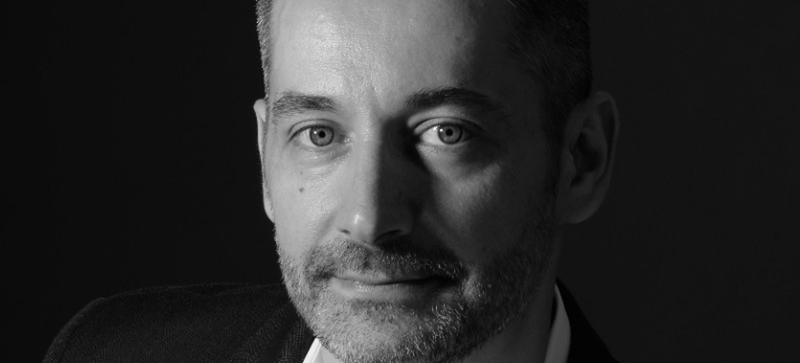

Founder · bondR
Csaba Bereczki
Powered by Agile
Csaba runs a lean, high-quality software delivery practice, keeping client, team, and agent aligned from discovery onward with one shared board and standardized specs through Stride.
Call on Csaba for- Discovery and delivery alignment with Stride
- Agile transformation and delivery leadership
- Business intelligence and AI/LLM development
The software development company of the future: lean, efficient, and Powered by Agile. Trusted by clients including Thomson Reuters.